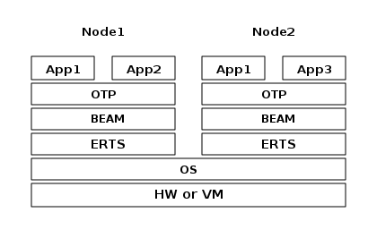

ERTS
The Runtime
When you start an Erlang or Elixir system, you get an OS process1 running the Erlang Runtime System, and inside that OS process, the BEAM VM is executing a number of Erlang processes2. Such a running instance of the Runtime System is referred to as an Erlang node3 (…), and it can be given a name to distinguish it from other Erlang nodes that may be running in the same network or even on the same host machine.
Layers in the Execution Environment

Layers in the Execution Environment

The Erlang Virtual Machine: BEAM
Just as ERTS is an implementation of a more general concept of a Erlang Runtime System so is BEAM an implementation of a more general Erlang Virtual Machine (EVM). There is no definition of what constitutes an EVM but BEAM actually has two levels of instructions: Generic Instructions and Specific Instructions. The generic instruction set could be seen as a blueprint for an EVM.
The Scheduler
One of the nice things that Erlang does for you is help with the physical execution of tasks. (…), if extra CPUs (or cores or hyperthreads) are available, Erlang uses them to run more of your concurrent tasks in parallel. If not, Erlang uses what CPU power there is to do them all a bit at a time.